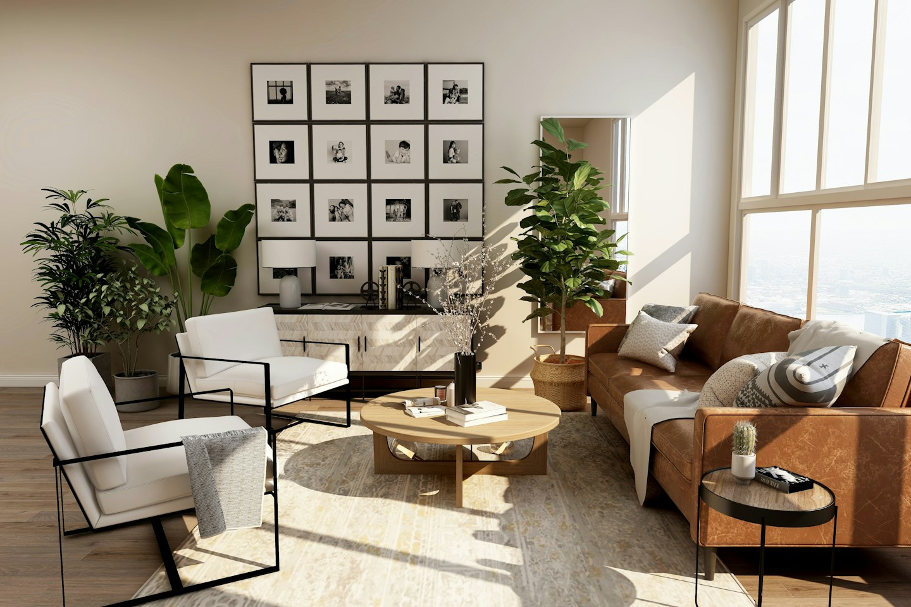

Плед один.
Города разные.
Соберите уютный вечер из любимых людей и видео, которое давно хотелось им показать.
Устроиться поудобнее
местодля своихПланы на вечер: никуда не спешить.
«Я тебе сейчас
такое покажу...»
С этой фразы начинаются самые хорошие вечера. Мы делаем место, где можно открыть ссылку из Telegram или YouTube и посмотреть её вместе, даже если вы далеко.
Здесь всё строится вокруг вашей компании: своя комната, общий просмотр и разговор без спешки.
Своё место
по эту сторону экрана.
Пример того, как может выглядеть ваша комната.
Вечер с хорошим продолжением
Пример видео · ваша компанияИнтерактивный пример интерфейса. Видео не воспроизводится.
Круг пока небольшой.
И очень тёплый.
Сейчас собираем небольшой круг участников, чтобы проверить комнаты, видеоссылки и синхронизацию. Новых участников приглашает команда.
У меня есть приглашение
Откройте персональную ссылку, которую прислала команда Плед. На этом лендинге нет формы входа или регистрации.
Закрытое тестирование · только по приглашению
Пока греется чай,
пара ответов.
Что можно будет смотреть?
В закрытом тесте проверяем просмотр по ссылкам из YouTube, Telegram, VK Видео и других видеоплатформ. Доступность зависит от источника и доступа к оригиналу. Собственного каталога фильмов у Плед нет.
Почему нельзя зарегистрироваться?
Сервис проходит закрытое тестирование. Новых участников приглашает команда проекта. Публичной регистрации и активации кодов на этой странице нет.
Когда откроется сервис?
Дата общего запуска пока не объявлена. Сначала проверяем основной сценарий и собираем обратную связь участников.